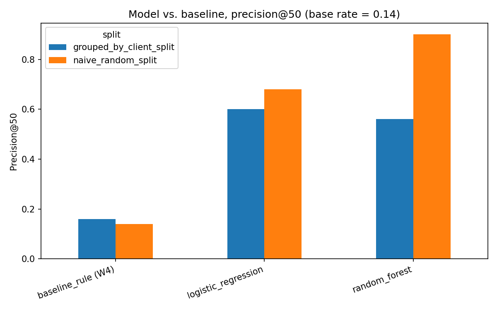
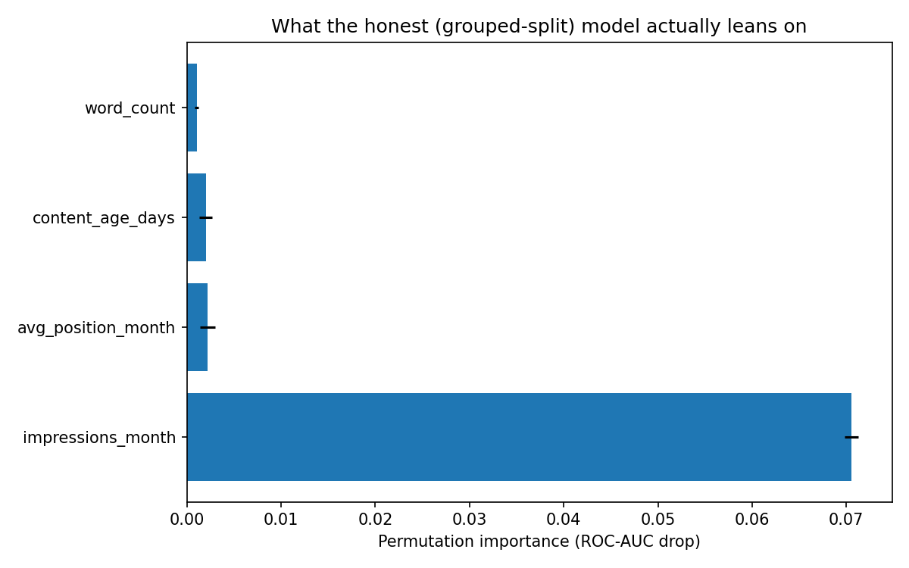
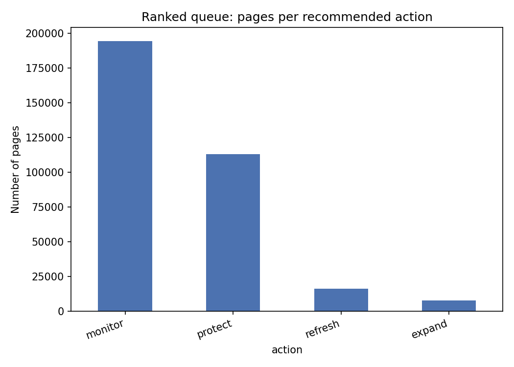

Abstract
Five sentences, no scrolling required
This study asks which content pages a reviewer should look at first, given limited weekly review time — the decision behind FlyRank's Refresh / Content Opportunity Scoring lane. Using 331,436 content items across 104 clients from FlyRank's real search warehouse, I built a forward-looking label (March 2026 search signal predicting an April 2026 outcome, not a same-window proxy) and trained a Random Forest against a transparent hand-written baseline, validated with a client-grouped train/test split to catch the common failure mode where a model memorizes clients instead of learning a real pattern. A mid-project leakage check caught one feature inflating precision@50 to a suspicious 0.98 through a floor effect on thin-click pages; once removed, the honest, client-grouped result is precision@50 of 0.56 — roughly 3.5× the hand-written baseline's 0.16 on the same split, against a 13.6% base rate. The output is a ranked, reason-coded action queue (refresh / expand / protect / monitor) built explicitly as decision-support for a human reviewer, not an automated system.
01 — Introduction
The problem this supports
A content or SEO reviewer at a growing site can only look at a fraction of the site's pages in any given week. Some pages are quietly declining in search visibility; most aren't. The cost of getting this wrong is asymmetric: a false positive wastes a reviewer's bounded, recoverable time on a page that didn't need attention, while a false negative lets a real decline continue unnoticed until someone finds it by accident — the more expensive failure, because it compounds the longer it goes unnoticed.
A hand-written rule can approximate "worth reviewing" — staleness, demand, position — but earlier work in this track (see Reproducibility) showed that such rules tangle fast: the same page routinely trips multiple overlapping conditions, and a rule set has no principled way to rank within the flagged group. This paper tests whether a learned model, validated honestly, can do better — and treats "the model looked suspiciously good" as a question to investigate rather than a result to celebrate.
02 — Data
Two real months, not one proxy window
Data comes from FlyRank/internship-warehouse, a gated production search
warehouse. Three tables were used: dim_clients, dim_content,
and two month-partitions of fact_content_daily_performance —
March 2026 (features) and April 2026 (outcome, used
only to build the label). Every ID in this dataset and in this paper is a pseudonym
(content_hash_id, client_hash_id) — no real URLs, titles, or
client names exist in this release.
What I deliberately excluded, and why
fact_content_query_90d(keyword-level table) — its 90-day window overlaps both months used here, and the alignment logic to use it safely without leaking wasn't built for this study.- The
month=2026-06partition (the sealed final month /_sampletable) — never queried anywhere in this project, confirmed programmatically in the underlying notebook. Kept untouched as a true holdout.
03 — Methodology
Assumptions, features, label, and validation design
Assumptions: a content item's March search behavior is informative about what happens to it in April; content metadata (word count, age) is stable across the two months; the label reflects one specific month-to-month transition, not a guaranteed general trend.
The label
is_declining_next_month = (clicks_april < clicks_march) — a genuine
forward comparison between two non-overlapping month partitions. This replaces a
same-window proxy label used in earlier stages of this project, which compared two
halves of a single month and therefore risked the label leaking into features derived
from that same window.
Features (final, four)
All computed from March only — nothing from April enters the feature set.
impressions_month— total March search impressionsavg_position_month— mean March search positionword_count— static content attributecontent_age_days— derived from the content's creation date, relative to end-of-March
A fifth candidate feature, days_with_clicks (count of March days with at
least one click), was tested and dropped — see the leakage investigation in
Results for why.
Baseline
A transparent, hand-written rule from earlier work in this project: a page is flagged if it is stale (180+ days since last update) and visible (500+ March impressions); its score is simply its impression count. No fitted weights.
Validation design
Two splits, reported side by side — the point being the gap between them:
- Naive random split — rows shuffled without regard to client; optimistic, since a client's other pages can leak into both train and test.
- Grouped-by-client split — no client's pages appear in both train and test. Confirmed programmatically: 0 overlapping clients in the grouped split, versus 55 of the same clients appearing in both under the naive split.
Leakage checks
Confirmed programmatically before trusting any result: April-derived columns never enter
the feature set; no FlyRank product-decision flags (health_score,
needs_ctr_fix, etc.) exist anywhere in this release; the client key is used
only as a grouping key for the split, never as a model input; the feature window strictly
precedes the label window.
04 — Results
Model vs. baseline — and a score that turned out to be lying
Logistic Regression and Random Forest were each compared against the baseline rule on the same rows, same split, same metric: precision@50 (matching a realistic weekly reviewer capacity) plus ROC-AUC.
Leakage investigation
The first pass, using all five candidate features, produced a Random Forest
precision@50 of 0.98 on both splits — a number worth being suspicious
of, per the standard that a suspiciously perfect score gets investigated, not
celebrated. Permutation importance showed one feature, days_with_clicks,
towering over the rest. Retraining without it dropped precision@50 on the trusted
grouped split from 0.98 to 0.56, while ROC-AUC only fell from ~0.96 to
~0.90 — evidence this wasn't pure leakage (that would collapse AUC toward 0.5), but a
real floor-effect distortion: pages with very few total March clicks concentrate their
activity into 1–2 days, making them look mechanically likely to "decline" in a way that
has little to do with genuine content decay. The feature was dropped. Every number
below reflects the corrected, four-feature model.
| Split | Method | Precision@50 | ROC-AUC | Base rate |
|---|---|---|---|---|
| Naive random | baseline_rule (W4) | 0.14 | 0.500 | 0.136 |
| Naive random | logistic_regression | 0.68 | 0.800 | 0.136 |
| Naive random | random_forest | 0.90 | 0.923 | 0.136 |
| Grouped by client | baseline_rule (W4) | 0.16 | 0.500 | 0.136 |
| Grouped by client | logistic_regression | 0.60 | 0.718 | 0.136 |
| Grouped by client | random_forest | 0.56 | 0.897 | 0.136 |
Highlighted row = the number this paper reports as the honest result. Grayed rows = naive-split numbers, shown for the before/after comparison, not as the headline claim.

Reading the result
On the split I trust, Random Forest reaches 0.56 precision@50 against a base rate of 0.136 and a baseline of 0.16 — roughly 3.5× the baseline and over 4× the base rate. That is a real, defensible lift, even though it is far short of the inflated 0.98 the first pass reported.

impressions_month (raw search visibility) does almost all of the work; position, content age, and word count contribute comparatively little on their own.Reading the errors
The corrected model's false positives cluster around pages with real, moderate March click volume that continued to receive (or grew) clicks in April despite a predicted decline — e.g. a page with 92 March clicks predicted 71% likely to decline that instead grew to 162 April clicks. This suggests the model is somewhat conservative around mid-traffic pages with strong positions (position ≈ 6), a pattern worth a human reviewer weighting against before trusting a `refresh` recommendation on a page that's actually performing fine.
05 — Limitations & honest framing
What this can and cannot claim
Language used throughout this paper
Claims are stated as observed, measured, directional, or decision-support — never as guarantees or causal claims. Nothing here demonstrates that refreshing a page causes a recovery, and nothing here reflects or reveals how any search engine's ranking algorithm works.
Named limitations
- Single transition tested. Only one month-to-month pair (March→April 2026) was evaluated. Content behavior can be seasonal; this has not been shown to hold for other month pairs.
- Unbalanced panel history. Clients started data tracking at very
different times —
gsc_data_startis missing for 37 of 104 clients andga4_data_startfor 53 of 104 — so this slice is not an evenly weighted sample of "typical" client behavior. - Binary label loses magnitude. A page that dropped 1 click and a page that dropped 500 clicks receive the same label.
- Observational, not causal. No experiment (e.g. an A/B test) was run; associations here do not establish that any action causes any outcome.
- Floor-effect feature dropped. An earlier version of this model included a feature that inflated precision@50 to 0.98 through a floor effect on low-count pages, not genuine signal (see Results). It was removed before this paper was written.
- Sealed month never touched.
month=2026-06was never queried anywhere in this project — kept as an untouched holdout for future verification.
06 — Ranked recommendations
The action playbook
Every content item in the March panel is scored by the corrected model's predicted decline probability, then mapped to an action by crossing that probability with March demand:

Intended use
Decision-support only. The queue tells a reviewer where to look first — it does not publish, unpublish, rewrite, or reprioritize anything on its own. Validated on one lane, one client base, one month-pair transition; not validated for other content types, languages, or clients outside this release.
Human review rules
- Every
refreshaction requires a human to open the actual page before acting. - Any page from a client that dominates its action bucket gets flagged for extra scrutiny — the pattern might reflect that client's process, not a general signal.
- Given the false-positive pattern found in error analysis, mid-traffic, well-ranked pages flagged for refresh deserve a second look before action.
What should NOT be automated
- No page should be auto-unpublished, auto-rewritten, or auto-deprioritized in a client-facing report based on this score alone.
- The score should never be shown to a client as a definitive judgment of content quality — it is an internal review-prioritization tool only.
- This model's output should not feed directly into another automated system without a human checkpoint in between.
Cost / value and monitoring
False positives cost bounded, recoverable reviewer time; false negatives cost silent, compounding decline — which is why precision at the top of the queue matters more than overall accuracy. Retrain when a new month partition becomes available; if precision@50 on a new month drops more than ~15% relative to the 0.56 validated here, stop trusting the queue and investigate before reviewers act on it further.
07 — Reproducibility
Every step, in a public repo
All notebooks referenced in this paper — the original question framing, the ML task framing, the data contract, the baseline rule, and this capstone model — are public and executable, given a Hugging Face read token for the same gated release.
- Capstone notebook (this paper's source)work/notebooks/capstone.ipynb
- Week 1 — research questionwork/notebooks/w01_research_question.ipynb
- Week 2 — ML task framingwork/notebooks/w02_ml_task_framing.ipynb
- Week 3 — data contractwork/notebooks/w03_data_contract.ipynb
- Week 4 — baseline rulework/notebooks/w04_baseline_score.ipynb
- Metrics receiptswork/outputs/*.json
- Full repositorygithub.com/YoussefZaky208/Flyrank-ML-Track-Assignment